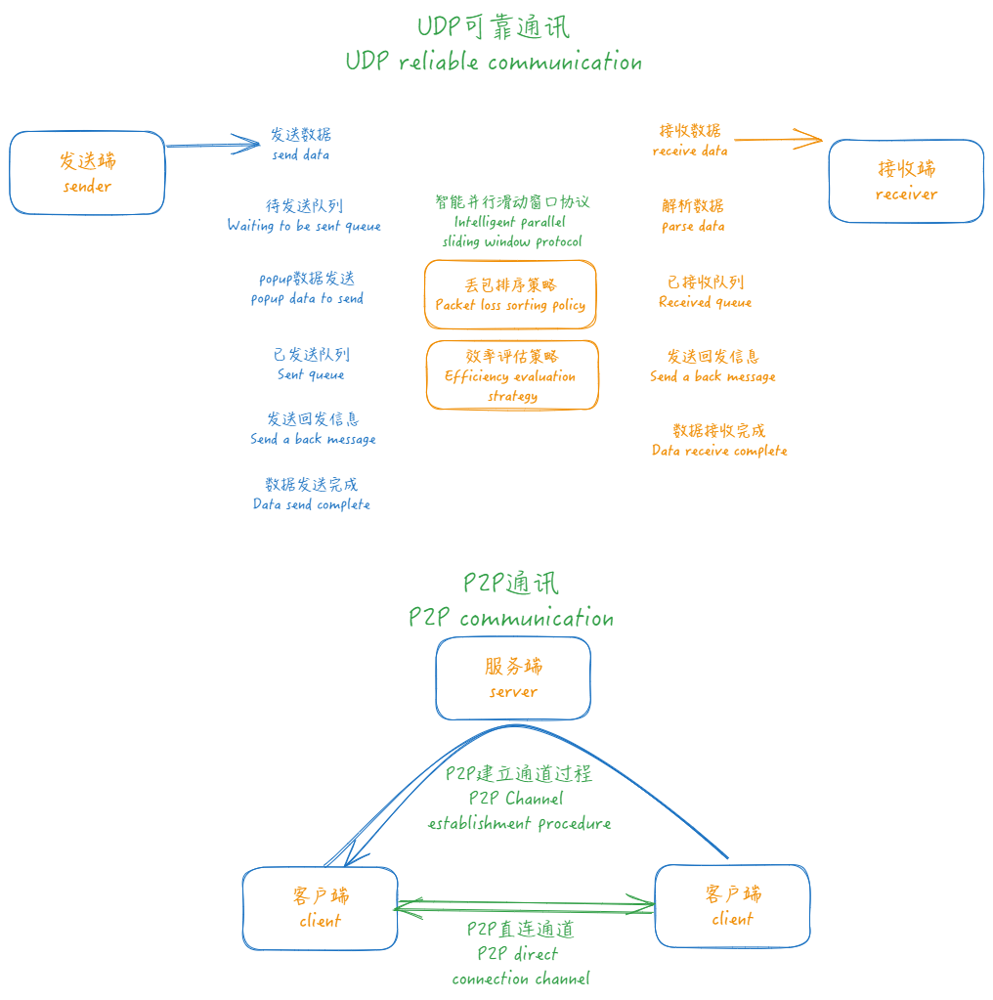

tianzuo.Zhuiri
tianzuo.Zhuiri


| operating system | ||
| compiler | ||
| programming language |            |
introduction

tianzuo.Zhuiri High performance reliable UDP data transmission P2P communication framework, can be used to establish P2P environment, file transfer, data communication. UDP protocol based Intranet penetration solution, easy to achieve audio and video conference center, live broadcast, remote desktop/document presentation and other functions.
legend: With these boots, you can walk a thousand miles a day and eight hundred miles a night, like wings. Thirst to drink, drink in the river Wei, river Wei insufficient, north drink Daze. Before he arrived, Tao died of thirst. Give up his staff, become Deng Lin.
motivation
Build reliable UDP data transmission, dynamically adjust the packet loss rate and transmission performance according to the policy, which can facilitate the establishment of P2P communication.

features
- 🧩 simple integration
- 📊 The high level protocol realizes the stability and reliability of data communication, and can dynamically modify the parameters to adjust the communication strategy.
- 🪡 Multiple components can be initialized with the same socket for multithreaded data communication.
- 🔢 Solution to packet loss: using self-developed parallel sliding window protocol to ensure stable and reliable data transmission.
- 🪟 Dynamic adjustment: The feasible efficiency of data communication is dynamically evaluated and calculated to obtain the best communication performance in the current environment.
- 👜 Data group frame: communication packet sending subcontract, receiving group packet, to ensure the integrity of the data order.
screenshot
tianzuo.Zhuiri Test:

example
cpp
#include <iostream>
#include <thread>
#include "tianzuo.ZhuiriInterface.h" // 接口头文件 interface heaher file
#include <winsock.h>
#pragma comment(lib, "ws2_32.lib")
// 数据回调函数
void msg_recv_callback(void* context, Zhuiri_data_pkg_pointer data_pkg) {
Zhuiri_data_pkg_struct data_new;
memcpy(&data_new, data_pkg, sizeof(Zhuiri_data_pkg_struct));
int send_size = data_pkg->m_data.get_send_size();
if (send_size > Zhuiri_content_size) {
char* send_data = new char[static_cast<unsigned int>(send_size)];
memcpy(send_data, data_pkg->get_send_data(), static_cast<unsigned int>(send_size));
data_new.set_send_data(send_data);
} else {
data_new.set_send_data(data_new.m_data.m_data);
}
tianzuo_DataQueue* const dataQueue = reinterpret_cast<tianzuo_DataQueue*>(context);
dataQueue->push_back(&data_new);
}
// 接收线程
void recv_thread(tianzuo_DataQueue* data_queue_recv) {
while (1) {
Zhuiri_data_pkg_struct recv_msg;
if (data_queue_recv->pop_up(&recv_msg) != Zhuiri_queue_error_code_success) {
//std::cout << "pop_up no data" << std::endl;
std::this_thread::sleep_for(std::chrono::milliseconds(200));
continue;
}
std::cout << "recv data: " << recv_msg.m_data.m_data << std::endl;
if (strcmp(recv_msg.m_data.m_data, "send data 99") == 0) {
std::cout << "recv done" << std::endl;
return;
}
}
}
int main() {
// 初始化接口 initialize the interface
std::unique_ptr<tianzuo_ZhuiriInterface> zhuiri_interface(new tianzuo_ZhuiriInterface());
// 创建实例 create an instance
tianzuo_ZhuiriInt* zhuiri = zhuiri_interface->initialize();
// 初始化数据队列接口 initialize the data queue interface
std::unique_ptr<tianzuo_DataQueueInterface> data_queue_interface(new tianzuo_DataQueueInterface());
// 创建数据队列实例 create an data queue instance
tianzuo_DataQueue* data_queue_recv = data_queue_interface->initialize();
// 初始化实例 initialize the instance
int port = 6666;
int error_code = zhuiri->initialize(
nullptr, port, reinterpret_cast<void*>(msg_recv_callback),
data_queue_recv, 6000, false);
if (error_code != Zhuiri_error_code_success) {
std::cout << "initialize error: " << error_code;
// 释放接口 terminate the interface
if (data_queue_interface != nullptr && data_queue_recv != nullptr) {
data_queue_interface->terminate(&data_queue_recv);
}
if (zhuiri_interface != nullptr && zhuiri != nullptr) {
zhuiri_interface->terminate(&zhuiri);
}
return -1;
}
// 设置默认参数 set default parameters
Zhuiri_param_struct param(0, 5168, 1024, 2280, 3, 5, 600);
zhuiri->set_param(¶m);
// 启动接收线程 start receiving thread
std::thread recv_th(recv_thread, data_queue_recv);
// 开始发送数据 start sending data
int data_size = 1024;
char data[1024];
memset(data, 0, data_size);
int ip = ntohl(inet_addr("127.0.0.1"));
for (size_t i = 0; i < 100; i++) {
//std::cout << "start send index: " << i << std::endl;
sprintf_s(data, data_size, "send data %d", i);
int data_len = strlen(data);
Zhuiri_send_param_struct send_param(0, ip, port, Zhuiri_data_sign_reliable, 7788, data, data_len);
error_code = zhuiri->send(&send_param);
if (error_code != Zhuiri_error_code_success) {
std::cout << "send error: " << error_code;
// 释放接口 terminate the interface
if (data_queue_interface != nullptr && data_queue_recv != nullptr) {
data_queue_interface->terminate(&data_queue_recv);
}
if (zhuiri_interface != nullptr && zhuiri != nullptr) {
zhuiri_interface->terminate(&zhuiri);
}
return -1;
}
//std::this_thread::sleep_for(std::chrono::milliseconds(10));
}
std::cout << "send done" << std::endl;
recv_th.join();
// 释放接口 terminate the interface
if (data_queue_interface != nullptr && data_queue_recv != nullptr) {
data_queue_interface->terminate(&data_queue_recv);
}
if (zhuiri_interface != nullptr && zhuiri != nullptr) {
zhuiri_interface->terminate(&zhuiri);
}
return 0;
}
python
from ctypes import *
from enum import Enum
import ctypes
import ipaddress
tianzuo_ZhuiriLib = cdll.LoadLibrary('./tianzuo.Zhuiri.dll')
class Zhuiri_error_code(Enum):
Zhuiri_error_code_success = 0x00000001 # 正确的值 (success)
Zhuiri_error_code_no_rights = 0x00000002 # 效验未通过 (no rights)
Zhuiri_error_code_socket = 0x0000000D # 套接字错误 (socket error)
Zhuiri_error_code_thread_error = 0x00000021 # 线程失败 (thread error)
Zhuiri_error_code_handle = 0x00000022 # 创建句柄失败 (handle error)
Zhuiri_error_code_out_of_cache = 0x00000023 # 超出缓冲最大值 (out f cache)
Zhuiri_error_code_out_of_memory = 0x00000024 # 内存溢出 (out of memory)
Zhuiri_error_code_time_out = 0x00000025 # 操作超时 (time out)
Zhuiri_error_code_user_reject = 0x00000098 # 对方决绝 (user reject)
Zhuiri_error_code_user_exit = 0x00000099 # 自行退出 (user exit)
class Zhuiri_queue_error_code(Enum):
Zhuiri_queue_error_code_success = 0x00000001 # 正确的值 (success)
Zhuiri_queue_error_code_invalid_value = 0x00000002 # 无效的值 (invalid value)
Zhuiri_queue_error_code_out_of_cache = 0x00000003 # 超出缓冲 (out f cache)
Zhuiri_queue_error_code_out_of_memory = 0x00000004 # 内存溢出 (out of memory)
Zhuiri_queue_error_code_no_data = 0x00000005 # 无数据 (no data)
class Zhuiri_data_sign(Enum):
Zhuiri_data_sign_none = 0x00000000 # 无标识 (no sign)
Zhuiri_data_sign_reliable = 0x00000001 # 可靠 (reliable)
Zhuiri_data_sign_processing = 0x00000002 # 处理中 (processing)
Zhuiri_data_sign_response = 0x00000003 # 回应消息 (response)
Zhuiri_data_sign_heart = 0x00000004 # 心跳包 (heart)
class tianzuo_ZhuiriInt:
def __init__(self):
tianzuo_ZhuiriLib.tianzuo_ZhuiriInterface_initialize.restype = c_void_p
self.obj = tianzuo_ZhuiriLib.tianzuo_ZhuiriInterface_initialize()
def __del__(self):
tianzuo_ZhuiriLib.tianzuo_ZhuiriInterface_terminate.argtypes = [c_void_p]
tianzuo_ZhuiriLib.tianzuo_ZhuiriInterface_terminate(self.obj)
def initialize(self, ip_addr, port, callback, context, heart_check_time, log_trace, iocp):
tianzuo_ZhuiriLib.tianzuo_ZhuiriInt_initialize.restype = c_int
tianzuo_ZhuiriLib.tianzuo_ZhuiriInt_initialize.argtypes = [c_void_p, c_char_p, ctypes.c_int, c_void_p, c_void_p, ctypes.c_int, ctypes.c_int, c_void_p]
return tianzuo_ZhuiriLib.tianzuo_ZhuiriInt_initialize(self.obj, ip_addr, port, callback, context, heart_check_time, log_trace, iocp)
def set_param(self, sender_index, init_server_port, msg_init_size, recv_ex_data_max, retry_max, retry_all_number, init_retry_time):
tianzuo_ZhuiriLib.tianzuo_ZhuiriInt_set_param.restype = c_int
tianzuo_ZhuiriLib.tianzuo_ZhuiriInt_set_param.argtypes = [c_void_p, c_int, c_int, c_int, c_int, c_int, c_int, c_int]
return tianzuo_ZhuiriLib.tianzuo_ZhuiriInt_set_param(self.obj, sender_index, init_server_port, msg_init_size, recv_ex_data_max, retry_max, retry_all_number, init_retry_time)
def send(self, sender_index, ip, port, sign, function, send_data, send_size):
tianzuo_ZhuiriLib.tianzuo_ZhuiriInt_send.restype = c_int
tianzuo_ZhuiriLib.tianzuo_ZhuiriInt_send.argtypes = [c_void_p, c_int, c_int, c_int, c_int, c_int, c_char_p, c_int]
return tianzuo_ZhuiriLib.tianzuo_ZhuiriInt_send(self.obj, sender_index, ip, port, sign, function, send_data, send_size)
class tianzuo_DataQueueInt:
def __init__(self):
tianzuo_ZhuiriLib.tianzuo_DataQueueInterface_initialize.restype = c_void_p
self.obj = tianzuo_ZhuiriLib.tianzuo_DataQueueInterface_initialize()
def __del__(self):
tianzuo_ZhuiriLib.tianzuo_DataQueueInterface_terminate.argtypes = [c_void_p]
tianzuo_ZhuiriLib.tianzuo_DataQueueInterface_terminate(self.obj)
def initialize(self):
tianzuo_ZhuiriLib.tianzuo_DataQueueInt_initialize.restype = c_void_p
tianzuo_ZhuiriLib.tianzuo_DataQueueInt_initialize.argtypes = [c_void_p]
return tianzuo_ZhuiriLib.tianzuo_DataQueueInt_initialize(self.obj)
callback_type = ctypes.CFUNCTYPE(c_void_p, c_void_p, c_void_p)
class Zhuiri_data_struct(ctypes.Structure):
_fields_ = [("m_ip_adrs", ctypes.c_int),
("m_port", ctypes.c_int),
("m_function", ctypes.c_int),
("m_sign", ctypes.c_int),
("m_index", ctypes.c_int),
("m_send_time", ctypes.c_int),
("m_send_size", ctypes.c_int),
("m_data", ctypes.c_char * 492)]
class Zhuiri_data_pkg_struct(ctypes.Structure):
_fields_ = [("m_data", Zhuiri_data_struct),
("m_send_data", ctypes.c_char_p),
("m_Zhuiri", ctypes.c_void_p),
("m_user_data", ctypes.c_void_p)]
def msg_recv_callback(context, pData):
data = ctypes.cast(pData, ctypes.POINTER(Zhuiri_data_pkg_struct)).contents
print("recv data:", data.m_data.m_data)
def main():
# 初始化接口 initialize the interface
print("initialize the interface")
# 创建实例 create an instance
data_queue_recv = tianzuo_DataQueueInt()
pdata_queue_recv = ctypes.pointer(ctypes.py_object(data_queue_recv))
pmsg_recv_callback = callback_type(msg_recv_callback)
Zhuiri = tianzuo_ZhuiriInt()
port = 6666
error_code = Zhuiri.initialize(None, port, pmsg_recv_callback, pdata_queue_recv, 6000, False, None)
if error_code != Zhuiri_error_code.Zhuiri_error_code_success.value:
print("initialize error:", error_code)
return
# 设置默认参数 set default parameters
Zhuiri.set_param(0, 5168, 1024, 2280, 3, 5, 600)
# 开始发送数据 start sending data
ip = int(ipaddress.IPv4Address("127.0.0.1"))
for i in range(100):
data = "send data {}".format(i)
data_len = len(data)
bytes_string = data.encode('utf-8')
error_code = Zhuiri.send(0, ip, port, Zhuiri_data_sign.Zhuiri_data_sign_reliable.value, 7788, bytes_string, data_len)
if error_code != Zhuiri_error_code.Zhuiri_error_code_success.value:
print("send error:", error_code)
return
print("test done")
if __name__ == '__main__':
main()
java
package cn.camelsoft;
import com.sun.jna.Library;
import com.sun.jna.Native;
import com.sun.jna.Pointer;
import com.sun.jna.Callback;
import com.sun.jna.CallbackReference;
import com.sun.jna.ptr.IntByReference;
import java.net.InetAddress;
import java.net.UnknownHostException;
enum Zhuiri_error_code {
Zhuiri_error_code_success (0x00000001), ///< 正确的值 (success)
Zhuiri_error_code_no_rights (0x00000002), ///< 效验未通过 (no rights)
Zhuiri_error_code_socket (0x0000000D), ///< 套接字错误 (socket error)
Zhuiri_error_code_thread_error (0x00000021), ///< 线程失败 (thread error)
Zhuiri_error_code_handle (0x00000022), ///< 创建句柄失败 (handle error)
Zhuiri_error_code_out_of_cache (0x00000023), ///< 超出缓冲最大值 (out f cache)
Zhuiri_error_code_out_of_memory (0x00000024), ///< 内存溢出 (out of memory)
Zhuiri_error_code_time_out (0x00000025), ///< 操作超时 (time out)
Zhuiri_error_code_user_reject (0x00000098), ///< 对方决绝 (user reject)
Zhuiri_error_code_user_exit (0x00000099); ///< 自行退出 (user exit)
private int value;
Zhuiri_error_code(int value) {
this.value = value;
}
public int getValue() {
return value;
}
};
enum Zhuiri_data_sign {
Zhuiri_data_sign_none (0x00000000), ///< 无标识 (no sign)
Zhuiri_data_sign_reliable (0x00000001), ///< 可靠 (reliable)
Zhuiri_data_sign_processing (0x00000002), ///< 处理中 (processing)
Zhuiri_data_sign_response (0x00000003), ///< 回应消息 (response)
Zhuiri_data_sign_heart (0x00000004); ///< 心跳包 (heart)
private int value;
Zhuiri_data_sign(int value) {
this.value = value;
}
public int getValue() {
return value;
}
};
interface tianzuo_ZhuiriLib extends Library {
tianzuo_ZhuiriLib instance = (tianzuo_ZhuiriLib) Native.load("./tianzuo.Zhuiri.dll", tianzuo_ZhuiriLib.class);
Pointer tianzuo_ZhuiriInterface_initialize();
void tianzuo_ZhuiriInterface_terminate(Pointer zhuiri);
int tianzuo_ZhuiriInt_initialize(Pointer zhuiri, String ip_addr, int port, Pointer callback, Pointer context, int heart_check_time, Boolean log_trace, Pointer iocp);
int tianzuo_ZhuiriInt_set_param(Pointer zhuiri, int sender_index, int init_server_port, int msg_init_size, int recv_ex_data_max, int retry_max, int retry_all_number, int init_retry_time);
int tianzuo_ZhuiriInt_send(Pointer zhuiri, int sender_index, int ip, int port, int sign, int function, String send_data, int send_size);
}
interface tianzuo_DataQueueLib extends Library {
tianzuo_DataQueueLib instance = (tianzuo_DataQueueLib) Native.load("./tianzuo.Zhuiri.dll", tianzuo_DataQueueLib.class);
Pointer tianzuo_DataQueueInterface_initialize();
void tianzuo_DataQueueInterface_terminate(Pointer DataQueue);
int tianzuo_DataQueueInt_initialize(Pointer DataQueue);
}
interface MyCallback extends Callback {
void callbackFunction(Pointer context, Pointer pData);
}
class MyCallbackImpl implements MyCallback {
@Override
public void callbackFunction(Pointer context, Pointer pData) {
Zhuiri_data_pkg_struct data_pkg = new Zhuiri_data_pkg_struct(pData);
String str = new String(data_pkg.m_data.m_data).trim();
System.out.printf("recv data: %s\n", str);
}
}
public class Main {
public static int ipToInt(String ipAddress) {
try {
InetAddress inetAddress = InetAddress.getByName(ipAddress);
byte[] bytes = inetAddress.getAddress();
int result = 0;
for (byte b : bytes) {
result = result << 8 | (b & 0xFF);
}
return result;
} catch (UnknownHostException e) {
System.err.println("Invalid IP address: " + ipAddress);
return 0;
}
}
public static void main(String[] args) {
System.setProperty("jna.encoding","UTF-8");
// 初始化接口 initialize the interface
System.out.printf("initialize the interface\n");
// 创建实例 create an instance
Pointer data_queue_recv = tianzuo_DataQueueLib.instance.tianzuo_DataQueueInterface_initialize();
MyCallback callback = new MyCallbackImpl();
Pointer pcallback = CallbackReference.getFunctionPointer(callback);
Pointer zhuiri = tianzuo_ZhuiriLib.instance.tianzuo_ZhuiriInterface_initialize();
int port = 6666;
int error_code = tianzuo_ZhuiriLib.instance.tianzuo_ZhuiriInt_initialize(zhuiri, null, port, pcallback, data_queue_recv, 6000, false, null);
if (error_code != Zhuiri_error_code.Zhuiri_error_code_success.getValue()) {
System.out.printf("tianzuo_ZhuiriInt_initialize error: %d\n", error_code);
return;
}
// 设置默认参数 set default parameters
tianzuo_ZhuiriLib.instance.tianzuo_ZhuiriInt_set_param(zhuiri, 0, 5168, 1024, 2280, 3, 5, 600);
// 开始发送数据 start sending data
String ipAddress = "127.0.0.1";
int ip = ipToInt(ipAddress);
int sport = 6666;
for (int i = 0; i < 100; i++) {
String data = String.format("send data %d ", i);
int data_len = data.length();
int error_code2 = tianzuo_ZhuiriLib.instance.tianzuo_ZhuiriInt_send(zhuiri, 0, ip, sport, Zhuiri_data_sign.Zhuiri_data_sign_reliable.getValue(), 7788, data, data_len);
if (error_code2 != Zhuiri_error_code.Zhuiri_error_code_success.getValue()) {
System.out.printf("tianzuo_ZhuiriInt_send error: %d\n", error_code2);
return;
}
}
System.out.printf("test done\n");
}
}
csharp
using System.Collections;
using System.Net;
using System.Runtime.InteropServices;
using System.Text;
public enum Zhuiri_error_code
{
Zhuiri_error_code_success = 0x00000001, ///< 正确的值 (success)
Zhuiri_error_code_no_rights = 0x00000002, ///< 效验未通过 (no rights)
Zhuiri_error_code_socket = 0x0000000D, ///< 套接字错误 (socket error)
Zhuiri_error_code_thread_error = 0x00000021, ///< 线程失败 (thread error)
Zhuiri_error_code_handle = 0x00000022, ///< 创建句柄失败 (handle error)
Zhuiri_error_code_out_of_cache = 0x00000023, ///< 超出缓冲最大值 (out f cache)
Zhuiri_error_code_out_of_memory = 0x00000024, ///< 内存溢出 (out of memory)
Zhuiri_error_code_time_out = 0x00000025, ///< 操作超时 (time out)
Zhuiri_error_code_user_reject = 0x00000098, ///< 对方决绝 (user reject)
Zhuiri_error_code_user_exit = 0x00000099, ///< 自行退出 (user exit)
}
public enum Zhuiri_data_sign
{
Zhuiri_data_sign_none = 0x00000000, ///< 无标识 (no sign)
Zhuiri_data_sign_reliable = 0x00000001, ///< 可靠 (reliable)
Zhuiri_data_sign_processing = 0x00000002, ///< 处理中 (processing)
Zhuiri_data_sign_response = 0x00000003, ///< 回应消息 (response)
Zhuiri_data_sign_heart = 0x00000004, ///< 心跳包 (heart)
};
public struct Zhuiri_data_struct
{
public Zhuiri_data_struct()
{
}
public int m_ip_adrs;
public int m_port;
public int m_function;
public int m_sign;
public int m_index;
public int m_send_time;
public int m_send_size;
[MarshalAs(UnmanagedType.ByValArray, SizeConst = 492)]
public byte[] m_data;
}
public struct Zhuiri_data_pkg_struct
{
public Zhuiri_data_pkg_struct()
{
}
public Zhuiri_data_struct m_data;
public IntPtr m_send_data;
public IntPtr m_Zhuiri;
public IntPtr m_user_data;
}
public delegate void CallbackDelegate(IntPtr context, IntPtr pData);
class Program
{
[DllImport("tianzuo.Zhuiri.dll")]
public static extern IntPtr tianzuo_ZhuiriInterface_initialize();
[DllImport("tianzuo.Zhuiri.dll")]
public static extern void tianzuo_ZhuiriInterface_terminate(IntPtr Zhuiri);
[DllImport("tianzuo.Zhuiri.dll")]
public static extern int tianzuo_ZhuiriInt_initialize(IntPtr Zhuiri, string ip_addr, int port, IntPtr callback, IntPtr context, int heart_check_time, bool log_trace, IntPtr iocp);
[DllImport("tianzuo.Zhuiri.dll")]
public static extern IntPtr tianzuo_DataQueueInterface_initialize();
[DllImport("tianzuo.Zhuiri.dll")]
public static extern int tianzuo_ZhuiriInt_set_param(IntPtr Zhuiri, int sender_index, int init_server_port, int msg_init_size, int recv_ex_data_max, int retry_max, int retry_all_number, int init_retry_time);
[DllImport("tianzuo.Zhuiri.dll")]
public static extern int tianzuo_ZhuiriInt_send(IntPtr Zhuiri, int sender_index, int ip, int port, int sign, int function, string send_data, int send_size);
static void MyCallback(IntPtr context, IntPtr pData)
{
Zhuiri_data_pkg_struct data = Marshal.PtrToStructure<Zhuiri_data_pkg_struct>(pData);
string str = Encoding.ASCII.GetString(data.m_data.m_data);
Console.WriteLine("recv data:" + str);
}
static void Main(string[] args)
{
// 初始化接口 initialize the interface
Console.WriteLine("initialize the interface\n");
// 创建实例 create an instance
IntPtr data_queue_recv = tianzuo_DataQueueInterface_initialize();
CallbackDelegate callback = new CallbackDelegate(MyCallback);
IntPtr callbackPtr = Marshal.GetFunctionPointerForDelegate(callback);
IntPtr zhuiri = tianzuo_ZhuiriInterface_initialize();
int port = 6666;
int error_code = tianzuo_ZhuiriInt_initialize(zhuiri, null, port, callbackPtr, data_queue_recv, 6000, false, 0);
if (error_code != ((int)Zhuiri_error_code.Zhuiri_error_code_success))
{
Console.WriteLine("tianzuo_ZhuiriInt_initialize error:" + error_code);
return;
}
// 设置默认参数 set default parameters
tianzuo_ZhuiriInt_set_param(zhuiri, 0, 5168, 1024, 2280, 3, 5, 600);
// 开始发送数据 start sending data
string ipAddressString = "127.0.1.1";
IPAddress ipAddress = IPAddress.Parse(ipAddressString);
byte[] bytes = ipAddress.GetAddressBytes();
if (BitConverter.IsLittleEndian)
{
Array.Reverse(bytes);
}
int ip = BitConverter.ToInt32(bytes, 0);
int sport = 6666;
for (int i = 0; i < 100; i++)
{
string data = String.Format("send data {0}", i);
int data_len = data.Length;
error_code = tianzuo_ZhuiriInt_send(zhuiri, 0, ip, sport, (int)Zhuiri_data_sign.Zhuiri_data_sign_reliable, 7788, data, data_len);
if (error_code != ((int)Zhuiri_error_code.Zhuiri_error_code_success))
{
Console.WriteLine("tianzuo_ZhuiriInt_send error:" + error_code);
return;
}
}
Console.WriteLine("test done");
}
}
javascript
Zhuiri_error_code_success = 0x00000001; ///< 正确的值 (success)
Zhuiri_error_code_no_rights = 0x00000002; ///< 效验未通过 (no rights)
Zhuiri_error_code_socket = 0x0000000D; ///< 套接字错误 (socket error)
Zhuiri_error_code_thread_error = 0x00000021; ///< 线程失败 (thread error)
Zhuiri_error_code_handle = 0x00000022; ///< 创建句柄失败 (handle error)
Zhuiri_error_code_out_of_cache = 0x00000023; ///< 超出缓冲最大值 (out f cache)
Zhuiri_error_code_out_of_memory = 0x00000024; ///< 内存溢出 (out of memory)
Zhuiri_error_code_time_out = 0x00000025; ///< 操作超时 (time out)
Zhuiri_error_code_user_reject = 0x00000098; ///< 对方决绝 (user reject)
Zhuiri_error_code_user_exit = 0x00000099; ///< 自行退出 (user exit)
Zhuiri_data_sign_none = 0x00000000; ///< 无标识 (no sign)
Zhuiri_data_sign_reliable = 0x00000001; ///< 可靠 (reliable)
Zhuiri_data_sign_processing = 0x00000002; ///< 处理中 (processing)
Zhuiri_data_sign_response = 0x00000003; ///< 回应消息 (response)
Zhuiri_data_sign_heart = 0x00000004; ///< 心跳包 (heart)
let ffi = require('ffi-napi')
const ref = require('ref-napi');
let tianzuo_ZhuiriLib = ffi.Library("tianzuo.Zhuiri.dll", {
'tianzuo_ZhuiriInterface_initialize': ['pointer', []],
'tianzuo_ZhuiriInterface_terminate':['void',['pointer']],
'tianzuo_ZhuiriInt_initialize':['int',['pointer','pointer','int','pointer','pointer','int', 'bool','pointer']],
'tianzuo_ZhuiriInt_set_param':['int',['pointer','int','int','int','int','int','int','int']],
'tianzuo_ZhuiriInt_send':['int',['pointer','int','int','int','int','int','string','int']],
'tianzuo_DataQueueInterface_initialize': ['pointer', []],
'tianzuo_DataQueueInterface_terminate':['void',['pointer']],
})
function ipToInt(ip) {
let parts = ip.split('.').map(Number);
return (parts[0] << 24) + (parts[1] << 16) + (parts[2] << 8) + parts[3];
}
function sleep(ms) {
return new Promise(resolve => setTimeout(resolve, ms));
}
async function main() {
// 初始化接口 initialize the interface
console.log("initialize the interface\n");
// 创建实例 create an instance
let data_queue_recv = tianzuo_ZhuiriLib.tianzuo_DataQueueInterface_initialize();
const callback = ffi.Callback('void', ['pointer', 'pointer'], function(context, pData) {
const data = pData.readCString(4*7);
console.log(`recv data: ${data}`);
});
let port = 5555;
let zhuiri = tianzuo_ZhuiriLib.tianzuo_ZhuiriInterface_initialize();
let error_code = tianzuo_ZhuiriLib.tianzuo_ZhuiriInt_initialize(zhuiri, null, port, callback, data_queue_recv, 6000, false, null);
if (error_code !== Zhuiri_error_code_success) {
console.log("tianzuo_ZhuiriInt_initialize error: %d\n", error_code);
return;
}
// 设置默认参数 set default parameters
tianzuo_ZhuiriLib.tianzuo_ZhuiriInt_set_param(zhuiri, 0, 5168, 1024, 2280, 3, 5, 600);
// 开始发送数据 start sending data
const ipString = '127.0.0.1';
const ip = ipToInt(ipString);
let sport = 6666;
for (let i = 0; i < 10; i++) {
const data = `send data ${i}`;
const data_len = data.length;
error_code = tianzuo_ZhuiriLib.tianzuo_ZhuiriInt_send(zhuiri, 0, ip, sport, Zhuiri_data_sign_reliable, 7788, data, data_len);
if (error_code !== Zhuiri_error_code_success) {
console.log("tianzuo_ZhuiriInt_send error: %d\n", error_code);
return;
}
}
await sleep(20000);
}
main();
console.log("test done\n");
php
<?php
// 检查是否加载了 FFI 扩展
if (extension_loaded('ffi')) {
echo("已启用 FFI 扩展\n");
} else {
die("未启动 FFI 扩展\n");
}
enum Zhuiri_error_code
{
const Zhuiri_error_code_success = 0x00000001; ///< 正确的值 (success)
const Zhuiri_error_code_no_rights = 0x00000002; ///< 效验未通过 (no rights)
const Zhuiri_error_code_socket = 0x0000000D; ///< 套接字错误 (socket error)
const Zhuiri_error_code_thread_error = 0x00000021; ///< 线程失败 (thread error)
const Zhuiri_error_code_handle = 0x00000022; ///< 创建句柄失败 (handle error)
const Zhuiri_error_code_out_of_cache = 0x00000023; ///< 超出缓冲最大值 (out f cache)
const Zhuiri_error_code_out_of_memory = 0x00000024; ///< 内存溢出 (out of memory)
const Zhuiri_error_code_time_out = 0x00000025; ///< 操作超时 (time out)
const Zhuiri_error_code_user_reject = 0x00000098; ///< 对方决绝 (user reject)
const Zhuiri_error_code_user_exit = 0x00000099; ///< 自行退出 (user exit)
};
enum Zhuiri_data_sign
{
const Zhuiri_data_sign_none = 0x00000000; ///< 无标识 (no sign)
const Zhuiri_data_sign_reliable = 0x00000001; ///< 可靠 (reliable)
const Zhuiri_data_sign_processing = 0x00000002; ///< 处理中 (processing)
const Zhuiri_data_sign_response = 0x00000003; ///< 回应消息 (response)
const Zhuiri_data_sign_heart = 0x00000004; ///< 心跳包 (heart)
};
$ffi = FFI::cdef("
void* tianzuo_ZhuiriInterface_initialize();
void tianzuo_ZhuiriInterface_terminate(void* *ZhuiriInt_pointer);
int tianzuo_ZhuiriInt_initialize(void* ZhuiriInt_pointer, const char* ip_addr, int port, const void* callback, const void* context, int const heart_check_time, bool log_trace, void* iocp);
int tianzuo_ZhuiriInt_set_param(void* ZhuiriInt_pointer, int sender_index, int init_server_port, int msg_init_size, int recv_ex_data_max, int retry_max, int retry_all_number, int init_retry_time);
int tianzuo_ZhuiriInt_send(void* ZhuiriInt_pointer, int sender_index, int ip, int port, int sign, int function, char* send_data, int send_size);
void* tianzuo_DataQueueInterface_initialize();
void tianzuo_DataQueueInterface_terminate(void* *DataQueue_pointer);
typedef unsigned(*Zhuiri_callback)(const void *context, const void *pData);
", "tianzuo.Zhuiri.dll");
# 初始化接口 initialize the interface
echo "initialize the interface" . "\n";
# 创建实例 create an instance
$data_queue_recv = $ffi->tianzuo_DataQueueInterface_initialize();
//function myCallback($context, $pData) {
// echo "phpCallback" . "\n";
//}
//
//// Define the callback function signature
//$callback = function($context, $pData) {
// myCallback($context, $pData);
//};
//
//$callableCallback = FFI::addr($callback);
//$phpCallback = function($context, $pData): void {
// echo "phpCallback" . "\n";
//};
//$callback= FFI::new("Zhuiri_callback", $phpCallback);
$callback = $ffi->callback("void(const char*)", function($message) {
echo "Callback message: $message\n";
});
$port = 6666;
$zhuiri = $ffi->tianzuo_ZhuiriInterface_initialize();
$error_code = $ffi->tianzuo_ZhuiriInt_initialize($zhuiri, null, $port, $callback, $data_queue_recv, 6000, False, null);
if ($error_code != Zhuiri_error_code::Zhuiri_error_code_success) {
echo "initialize error: " . $error_code . "\n";
return;
}
# 设置默认参数 set default parameters
$ffi->tianzuo_ZhuiriInt_set_param($zhuiri, 0, 5168, 1024, 2280, 3, 5, 600);
# 开始发送数据 start sending data
$ip = ip2long("127.0.0.1");
for ($i = 0; $i < 10; $i++) {
$data = sprintf("send data %d", $i);
$data_len = strlen($data);
echo "ip: " . $ip . "\n";
echo "port: " . $port . "\n";
echo "send data: " . $data . "\n";
echo "data_len: " . $data_len . "\n";
$error_code = $ffi->tianzuo_ZhuiriInt_send($zhuiri, 0, $ip, $port, Zhuiri_data_sign::Zhuiri_data_sign_reliable, 7788, $data, $data_len);
if ($error_code != Zhuiri_error_code::Zhuiri_error_code_success) {
echo "send error: " . $error_code . "\n";
return;
}
}
echo "test done" . "\n";
?>
vb
Imports System.IO
Imports System.Net
Imports System.Runtime.InteropServices
Imports System.Runtime.InteropServices.JavaScript.JSType
Imports System.Text
Enum Zhuiri_error_code
Zhuiri_error_code_success = 1 ' 正确的值 (success)
Zhuiri_error_code_no_rights = 2 ' 效验未通过 (no rights)
Zhuiri_error_code_socket = 13 ' 套接字错误 (socket Error)
Zhuiri_error_code_thread_error = 21 ' 线程失败 (thread Error)
Zhuiri_error_code_handle = 22 ' 创建句柄失败 (handle Error)
Zhuiri_error_code_out_of_cache = 23 ' 超出缓冲最大值 (out f cache)
Zhuiri_error_code_out_of_memory = 24 ' 内存溢出 (out Of memory)
Zhuiri_error_code_time_out = 25 ' 操作超时 (time out)
Zhuiri_error_code_user_reject = 98 ' 对方决绝 (user reject)
Zhuiri_error_code_user_exit = 99 ' 自行退出 (user Exit)
End Enum
Enum Zhuiri_data_sign
Zhuiri_data_sign_none = 0 ' 无标识 (no sign)
Zhuiri_data_sign_reliable = 1 ' 可靠 (reliable)
Zhuiri_data_sign_processing = 2 ' 处理中 (processing)
Zhuiri_data_sign_response = 3 ' 回应消息 (response)
Zhuiri_data_sign_heart = 4 ' 心跳包 (heart)
End Enum
Structure Zhuiri_data_struct
Public m_ip_adrs As Integer
Public m_port As Integer
Public m_function As Integer
Public m_sign As Integer
Public m_index As Integer
Public m_send_time As Integer
Public m_send_size As Integer
<MarshalAs(UnmanagedType.ByValArray, SizeConst:=492)>
Public m_data As Byte()
End Structure
Structure Zhuiri_data_pkg_struct
Public m_data As Zhuiri_data_struct
Public m_send_data As IntPtr
Public m_Zhuiri As IntPtr
Public m_user_data As IntPtr
End Structure
Module Program
<DllImport("tianzuo.Zhuiri.dll")>
Public Function tianzuo_ZhuiriInterface_initialize() As IntPtr
End Function
<DllImport("tianzuo.Zhuiri.dll")>
Public Function tianzuo_ZhuiriInterface_terminate(ByRef ZhuiriInt_pointer As IntPtr)
End Function
<DllImport("tianzuo.Zhuiri.dll")>
Public Function tianzuo_ZhuiriInt_initialize(ZhuiriInt_pointer As IntPtr, ip_addr As String, port As Integer,
callback As IntPtr, context As IntPtr, heart_check_time As Integer, log_trace As Boolean, iocp As IntPtr) As Integer
End Function
<DllImport("tianzuo.Zhuiri.dll")>
Public Function tianzuo_ZhuiriInt_set_param(ZhuiriInt_pointer As IntPtr,
sender_index As Integer, init_server_port As Integer, msg_init_size As Integer,
recv_ex_data_max As Integer, retry_max As Integer, retry_all_number As Integer,
init_retry_time As Integer) As Integer
End Function
<DllImport("tianzuo.Zhuiri.dll")>
Public Function tianzuo_ZhuiriInt_send(ZhuiriInt_pointer As IntPtr,
sender_index As Integer, ip As Integer, port As Integer, sign As Integer, func As Integer, send_data As String, send_size As Integer) As Integer
End Function
<DllImport("tianzuo.Zhuiri.dll")>
Public Function tianzuo_DataQueueInterface_initialize() As IntPtr
End Function
<DllImport("tianzuo.Zhuiri.dll")>
Public Function tianzuo_DataQueueInterface_terminate(ByRef DataQueue_pointer As IntPtr)
End Function
Public Delegate Sub CallbackFunc(context As IntPtr, pData As IntPtr)
Public Sub msg_recv_callback(context As IntPtr, pData As IntPtr)
Dim data As Zhuiri_data_pkg_struct = Marshal.PtrToStructure(Of Zhuiri_data_pkg_struct)(pData)
Dim Str As String = Encoding.ASCII.GetString(data.m_data.m_data)
Console.WriteLine("recv data:" + Str)
End Sub
Sub Main(args As String())
' 初始化接口 initialize the interface
Console.WriteLine("initialize the interface")
' 创建实例 create an instance
Dim data_queue_recv As IntPtr = tianzuo_DataQueueInterface_initialize()
Dim callbackDelegate As CallbackFunc = AddressOf msg_recv_callback
Dim callbackPtr As IntPtr = Marshal.GetFunctionPointerForDelegate(callbackDelegate)
Dim port As Integer = 6666
Dim Zhuiri As IntPtr = tianzuo_ZhuiriInterface_initialize()
Dim error_code As Integer = tianzuo_ZhuiriInt_initialize(Zhuiri, IntPtr.Zero, port, callbackPtr, data_queue_recv, 6000, False, IntPtr.Zero)
If (error_code <> Zhuiri_error_code.Zhuiri_error_code_success) Then
Console.WriteLine("tianzuo_ZhuiriInt_initialize error:" + error_code.ToString)
Return
End If
' 设置默认参数 Set Default parameters
tianzuo_ZhuiriInt_set_param(Zhuiri, 0, 5168, 1024, 2280, 3, 5, 600)
' 开始发送数据 start sending data
Dim ipAddressString As String = "127.0.1.1"
Dim ipAddress As IPAddress = IPAddress.Parse(ipAddressString)
Dim bytes As Byte() = ipAddress.GetAddressBytes()
If (BitConverter.IsLittleEndian) Then
Array.Reverse(bytes)
End If
Dim ip As Integer = BitConverter.ToInt32(bytes, 0)
Dim sport As Integer = 6666
For i As Integer = 0 To 99
Dim data As String = String.Format("send data {0}", i)
Dim data_len As Integer = data.Length
error_code = tianzuo_ZhuiriInt_send(Zhuiri, 0, ip, sport, Zhuiri_data_sign.Zhuiri_data_sign_reliable, 7788, data, data_len)
If (error_code <> Zhuiri_error_code.Zhuiri_error_code_success) Then
Console.WriteLine("tianzuo_ZhuiriInt_send error:" + error_code.ToString)
Return
End If
Next
Console.WriteLine("test done -------------------")
End Sub
End Module
go
package main
/*
#include "tianzuo.ZhuiriInterface.h"
void msg_recv_callback_cgo(const void *context, const void *pData);
*/
import "C"
import (
"fmt"
"net"
"syscall"
"unsafe"
)
const (
Zhuiri_error_code_success = 1 // 正确的值 (success)
Zhuiri_error_code_no_rights = 2 // 效验未通过 (no rights)
Zhuiri_error_code_socket = 13 // 套接字错误 (socket error)
Zhuiri_error_code_thread_error = 21 // 线程失败 (thread error)
Zhuiri_error_code_handle = 22 // 创建句柄失败 (handle error)
Zhuiri_error_code_out_of_cache = 23 // 超出缓冲最大值 (out f cache)
Zhuiri_error_code_out_of_memory = 24 // 内存溢出 (out of memory)
Zhuiri_error_code_time_out = 25 // 操作超时 (time out)
Zhuiri_error_code_user_reject = 98 // 对方决绝 (user reject)
Zhuiri_error_code_user_exit = 99 // 自行退出 (user exit)
)
const (
Zhuiri_data_sign_none = 0 // 无标识 (no sign)
Zhuiri_data_sign_reliable = 1 // 可靠 (reliable)
Zhuiri_data_sign_processing = 2 // 处理中 (processing)
Zhuiri_data_sign_response = 3 // 回应消息 (response)
Zhuiri_data_sign_heart = 4 // 心跳包 (heart)
)
func ipToInt(ip net.IP) uint32 {
ip = ip.To4()
if ip == nil {
return 0
}
ipInt := uint32(ip[0])<<24 | uint32(ip[1])<<16 | uint32(ip[2])<<8 | uint32(ip[3])
return ipInt
}
type Zhuiri_data_pkg_struct C.Zhuiri_data_pkg_struct
//export msg_recv_callback
func msg_recv_callback(context unsafe.Pointer, pData unsafe.Pointer) {
data := *(*Zhuiri_data_pkg_struct)(unsafe.Pointer(pData))
charArray := data.m_data.m_data
goStr := C.GoString((*C.char)(unsafe.Pointer(&charArray[0])))
fmt.Println("recv data:", goStr)
}
func main() {
// 初始化接口 initialize the interface
dll := syscall.MustLoadDLL("tianzuo.Zhuiri.dll")
// 创建实例 create an instance
tianzuo_DataQueueInterface_initialize := dll.MustFindProc("tianzuo_DataQueueInterface_initialize")
data_queue_recv, _, _ := tianzuo_DataQueueInterface_initialize.Call()
tianzuo_ZhuiriInterface_initialize := dll.MustFindProc("tianzuo_ZhuiriInterface_initialize")
Zhuiri, _, _ := tianzuo_ZhuiriInterface_initialize.Call()
var ip uintptr
port := 6666
var iocp uintptr
tianzuo_ZhuiriInt_initialize := dll.MustFindProc("tianzuo_ZhuiriInt_initialize")
msg_recv_callback_ptr := uintptr(unsafe.Pointer(C.msg_recv_callback_cgo))
error_code, _, _ := tianzuo_ZhuiriInt_initialize.Call(Zhuiri, ip, uintptr(C.int(port)), msg_recv_callback_ptr, data_queue_recv, 6000, uintptr(C.int(0)), iocp)
if error_code != Zhuiri_error_code_success {
fmt.Println("tianzuo_ZhuiriInt_initialize error: ", error_code)
}
// 设置默认参数 set default parameters
tianzuo_ZhuiriInt_set_param := dll.MustFindProc("tianzuo_ZhuiriInt_set_param")
tianzuo_ZhuiriInt_set_param.Call(Zhuiri, 0, 5168, 1024, 2280, 3, 5, 600)
// 开始发送数据 start sending data
ipStr := "127.0.0.1"
ipint := net.ParseIP(ipStr)
nip := ipToInt(ipint)
tianzuo_ZhuiriInt_send := dll.MustFindProc("tianzuo_ZhuiriInt_send")
for i := 0; i < 100; i++ {
data := "send data %d"
gdata := fmt.Sprintf(data, i)
cdata := C.CString(gdata)
gdata_len := len(gdata)
data_len := C.int(gdata_len)
error_code, _, _ = tianzuo_ZhuiriInt_send.Call(Zhuiri, 0, uintptr(C.int(nip)), uintptr(C.int(port)), Zhuiri_data_sign_reliable, 7788, uintptr(unsafe.Pointer(cdata)), uintptr(data_len))
if error_code != Zhuiri_error_code_success {
fmt.Println("tianzuo_ZhuiriInt_send error: ", error_code)
return
}
}
fmt.Println("test done -------------------")
}
rust
use std::os::raw::c_char;
use std::ffi::{c_int};
use std::ffi::CString;
use std::ptr::null;
use std::mem;
type CallbackFunc = extern "C" fn(context: *mut std::ffi::c_void, pData: *mut std::ffi::c_void);
struct Zhuiri_data_struct {
m_ip_adrs: i32,
m_port: i32,
m_function: i32,
m_sign: i32,
m_index: i32,
m_send_time: i32,
m_send_size: i32,
m_data: [u8; 492],
}
struct Zhuiri_data_pkg_struct {
m_data: Zhuiri_data_struct,
m_send_data: *const c_char,
m_Zhuiri: *mut std::ffi::c_void,
m_user_data: *mut std::ffi::c_void,
}
#[link(name = "tianzuo.Zhuiri")]
extern {
fn tianzuo_ZhuiriInterface_initialize() -> *mut std::ffi::c_void;
fn tianzuo_ZhuiriInterface_terminate(obj: *mut std::ffi::c_void);
fn tianzuo_ZhuiriInt_initialize(obj: *mut std::ffi::c_void, ip_addr: *const c_char, port: c_int, callback: *mut std::ffi::c_void, context: *mut std::ffi::c_void, heart_check_time: c_int, log_trace: c_int, iocp: *const std::ffi::c_void) -> c_int;
fn tianzuo_ZhuiriInt_set_param(obj: *mut std::ffi::c_void, sender_index: c_int, init_server_port: c_int, msg_init_size: c_int, recv_ex_data_max: c_int, retry_max: c_int, retry_all_number: c_int, init_retry_time: c_int);
fn tianzuo_ZhuiriInt_send(obj: *mut std::ffi::c_void, sender_index: c_int, ip: c_int, port: c_int, sign: c_int, function: c_int, send_data: *const c_char, send_size: c_int) -> c_int;
fn tianzuo_DataQueueInterface_initialize() -> *mut std::ffi::c_void;
fn tianzuo_DataQueueInterface_terminate(obj: *mut std::ffi::c_void);
fn tianzuo_DataQueueInt_initializee(obj: *mut std::ffi::c_void);
}
extern "C" fn msg_recv_callback(context: *mut std::ffi::c_void, pData: *mut std::ffi::c_void) {
unsafe {
//println!("Rust callback function called");
let data: &mut Zhuiri_data_pkg_struct = unsafe { mem::transmute(pData) };
let string = std::str::from_utf8(&data.m_data.m_data).unwrap();
println!("recv data: {}", string);
}
}
fn ip_to_int(ip: &str) -> i32 {
let parts: Vec<i32> = ip.split('.').map(|part| part.parse().unwrap()).collect();
(parts[0] << 24) + (parts[1] << 16) + (parts[2] << 8) + parts[3]
}
fn main() {
unsafe {
// 初始化接口 initialize the interface
println!("initialize the interface");
// 创建实例 create an instance
let data_queue_recv = tianzuo_DataQueueInterface_initialize();
let pdata_queue_recv= data_queue_recv as *mut std::ffi::c_void;
let pmsg_recv_callback = msg_recv_callback as *mut std::ffi::c_void;
let zhuiri = tianzuo_ZhuiriInterface_initialize();
let port = 6666;
let error_code = tianzuo_ZhuiriInt_initialize(zhuiri, null(), port, pmsg_recv_callback, pdata_queue_recv, 6000, 0, null());
if 1 != error_code {
println!("tianzuo_ZhuiriInt_initialize error: {:?}", error_code);
}
// 设置默认参数 set default parameters
tianzuo_ZhuiriInt_set_param(zhuiri,0, 5168, 1024, 2280, 3, 5, 600);
// 开始发送数据 start sending data
let ip = ip_to_int("127.0.0.1");
for i in 0..=99 {
let data = format!("send data {}", i);
let data_str = CString::new(String::from(data.clone())).expect("Failed to create CString");
let data_len = data.len() as i32;
let error_code = tianzuo_ZhuiriInt_send(zhuiri, 0, ip, port, 1, 7788, data_str.as_ptr(), data_len);
if 1 != error_code {
println!("tianzuo_ZhuiriInt_send error: {:?}", error_code);
}
}
println!("test done -------------------")
}
}
ruby
require 'fiddle'
require 'ipaddr'
lib = Fiddle::dlopen('C:/Users/zhengtianzuo/RubymineProjects/tianzuo.ZhuiriTest/tianzuo.Zhuiri.dll')
tianzuo_ZhuiriInterface_initialize = Fiddle::Function.new(lib['tianzuo_ZhuiriInterface_initialize'], [], Fiddle::TYPE_VOIDP)
tianzuo_ZhuiriInterface_terminate = Fiddle::Function.new(lib['tianzuo_ZhuiriInterface_terminate'], [Fiddle::TYPE_VOIDP], Fiddle::TYPE_VOID)
tianzuo_ZhuiriInt_initialize = Fiddle::Function.new(lib['tianzuo_ZhuiriInt_initialize'], [Fiddle::TYPE_VOIDP, Fiddle::TYPE_VOIDP, Fiddle::TYPE_INT, Fiddle::TYPE_VOIDP, Fiddle::TYPE_VOIDP, Fiddle::TYPE_INT, Fiddle::TYPE_INT, Fiddle::TYPE_VOIDP], Fiddle::TYPE_INT)
tianzuo_ZhuiriInt_set_param = Fiddle::Function.new(lib['tianzuo_ZhuiriInt_set_param'], [Fiddle::TYPE_VOIDP, Fiddle::TYPE_INT, Fiddle::TYPE_INT, Fiddle::TYPE_INT, Fiddle::TYPE_INT, Fiddle::TYPE_INT, Fiddle::TYPE_INT, Fiddle::TYPE_INT], Fiddle::TYPE_INT)
tianzuo_ZhuiriInt_send = Fiddle::Function.new(lib['tianzuo_ZhuiriInt_send'], [Fiddle::TYPE_VOIDP, Fiddle::TYPE_INT, Fiddle::TYPE_INT, Fiddle::TYPE_INT, Fiddle::TYPE_INT, Fiddle::TYPE_INT, Fiddle::TYPE_VOIDP, Fiddle::TYPE_INT], Fiddle::TYPE_INT)
tianzuo_DataQueueInterface_initialize = Fiddle::Function.new(lib['tianzuo_DataQueueInterface_initialize'], [], Fiddle::TYPE_VOIDP)
tianzuo_DataQueueInterface_terminate = Fiddle::Function.new(lib['tianzuo_DataQueueInterface_terminate'], [Fiddle::TYPE_VOIDP], Fiddle::TYPE_VOID)
def string_to_char_pointer(str)
ptr = Fiddle::Pointer[str]
ptr.to_s
end
# 初始化接口 initialize the interface
print("initialize the interface\n")
# 创建实例 create an instance
data_queue_recv = tianzuo_DataQueueInterface_initialize.call()
callback = Fiddle::Closure::BlockCaller.new(Fiddle::TYPE_INT, [Fiddle::TYPE_VOIDP, Fiddle::TYPE_VOIDP]) do |context, pData|
puts "callback function called"
end
port = 6666
zhuiri = tianzuo_ZhuiriInterface_initialize.call()
error_code = tianzuo_ZhuiriInt_initialize.call(zhuiri, nil, port, callback.to_i, data_queue_recv, 6000, 0, nil)
if error_code != 1
print("initialize error:", error_code, "\n")
return
end
# 设置默认参数 set default parameters
tianzuo_ZhuiriInt_set_param.call(zhuiri, 0, 5168, 1024, 2280, 3, 5, 600)
# 开始发送数据 start sending data
ip = IPAddr.new("127.0.0.1").to_i
for i in 1..10
data = "send data %d" % [i]
data_len = data.length
error_code = tianzuo_ZhuiriInt_send.call(zhuiri, 0, ip, port, 1, 7788, data, data_len)
if error_code != 1
print("tianzuo_ZhuiriInt_send error:", error_code, "\n")
return
end
end
download
 |
 |
 |
 |